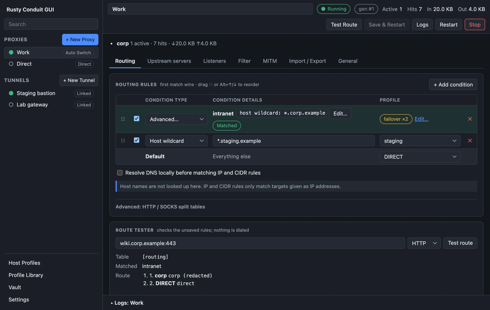
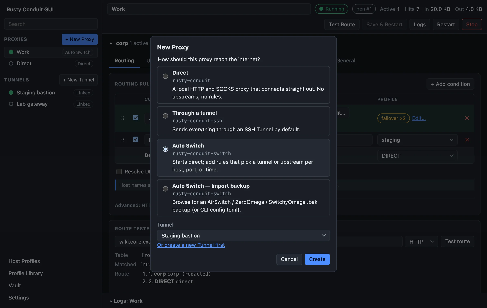
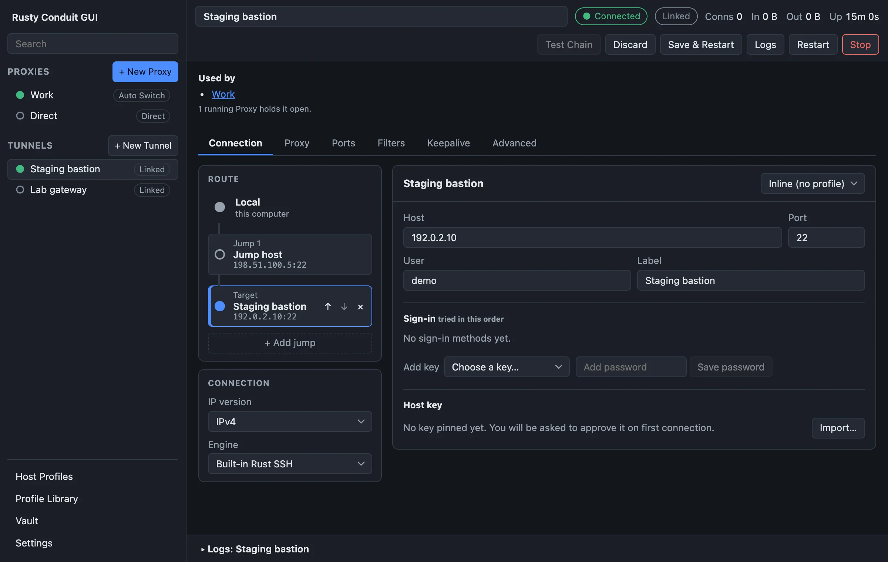
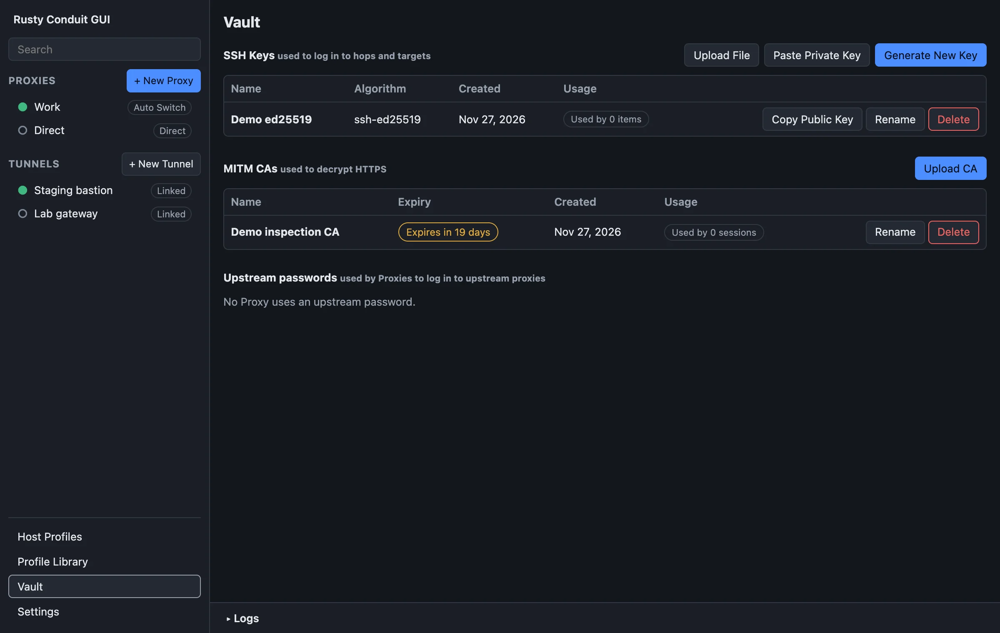

One binary, every client protocol
HTTP forwarding, HTTPS CONNECT, SOCKS4, SOCKS4a, and SOCKS5, on separate ports or multiplexed on one port. Browsers, curl, package managers, SDKs, and agents all just work.
HTTP · HTTPS · SOCKS4/4a/5 · SSH · rules
Route traffic directly, through SSH, or through other proxies by rules. Run them on your laptop or in Docker, scale them out behind HAProxy, or drive them all from a desktop app.
For development, testing, labs, and homelabs. These tools are well tested and built with care, but nothing here is promised to be production-ready, and the proxies have no inbound authentication. Keep them on loopback or a private network you control.
HTTP forwarding, HTTPS CONNECT, SOCKS4, SOCKS4a, and SOCKS5, on separate ports or multiplexed on one port. Browsers, curl, package managers, SDKs, and agents all just work.
Point your tools at a local proxy and everything, DNS included, leaves through your bastion or homelab box. It auto-reconnects, and it can also share your connection with the remote host (ssh -R).
Send *.corp.example to the office proxy, the homelab subnet over SSH, ads to block, and the rest direct. Failover chains, time-of-day rules, and hot reload with no dropped connections. Imports AirSwitch, ZeroOmega, and SwitchyOmega backups.
Per-connection access logs (logfmt or JSON) name the rule, profile, and upstream each connection used. Opt-in HTTPS inspection with your own CA: none is ever auto-generated.
About 7–8 MB of RAM idle and 26–27 KB per open tunnel, as measured on Linux with the container images' defaults. Nothing is cached, and long silent connections stay open.
rustls + ring, with no OpenSSL. Prebuilt for Linux, macOS, and Windows on amd64 and arm64, plus multi-arch container images.
All five are BSD-3-Clause and share one engine, so a fix lands in every tool at once.
Run a local HTTP/SOCKS proxy, with logging, allow/block lists, or HTTPS inspection.
Releases ghcr.io/jpbaking/rusty-conduit:2
Send everything through an SSH server (bastion, homelab, cloud VM), or let that server egress through you.
Releases ghcr.io/jpbaking/rusty-conduit-ssh:2
Route each connection by rules to different upstream proxies, with failover and hot reload.
Releases ghcr.io/jpbaking/rusty-conduit-switch:2
Do all of the above from a tray app, with saved Proxies and SSH Tunnels, an encrypted secret vault, and no dependence on ~/.ssh. See it →
Releases .dmg .msi/.exe .deb .rpm .AppImage
Embed the engine in your own Rust program.
Git dependency pinned to a release tag
Three ways out, one engine. Pick a flow to see where your traffic goes.
rusty-conduit listens on loopback, checks every connection against your allow and block lists, logs it, and sends it straight out. Blocked hosts get a 403 or a SOCKS rejection before any connection is made. Recipe →rusty-conduit-ssh runs your system ssh, so your config, agent, ProxyJump, and 2FA prompts just work. Every connection and every DNS lookup for a proxied host goes through the bastion, so names that resolve only there work too. Recipe →rusty-conduit-switch matches each connection against your rules, top to bottom, and sends it direct, to an upstream proxy, or to block. Edit config.toml and the change applies without dropping connections. Recipe →Rusty Conduit GUI builds the same setups from a tray icon and a window: Proxies that go direct, through SSH Tunnels, through upstream proxies, or wherever Auto Switch rules send them. It saves, runs, autostarts, and reconnects them all for you.


config.toml.
ssh binary and never reads or writes ~/.ssh.
config.toml for all three CLIs, so a setup can run headless in Docker later.ProxyCommand, GSSAPI, or hardware keys.Download the beta .dmg .msi .exe .deb .rpm .AppImage
Screenshots show the app's built-in demo data.
Recipes that combine the pieces. Each one has a guide, and most have a runnable Compose project.
Any rule target can be an ordered list. The next profile is tried only when the connect or handshake fails, never once bytes have flowed.
Guide →See full URLs and status codes for HTTPS. Off by default, and no tool ever creates a CA for you. Upstream certificates are still verified.
Guide →A VM or build box with no egress gets an HTTP and SOCKS proxy on its own loopback, carried back over ssh -R and out through your machine.
Give an agent or an untrusted build exactly the destinations it needs, on a network whose only way out is the proxy, and log everything it tries.
Guide →Run N identical replicas behind HAProxy in TCP mode. Docker DNS discovery picks up --scale changes within seconds, with a stats page per replica.
Anything ssh can reach, the proxy can reach: -J chains, ProxyJump, and extra -L forwards after --. The GUI builds the same chain hop by hop.
docker run --rm -p 127.0.0.1:3128:3128 -p 127.0.0.1:1080:1080 ghcr.io/jpbaking/rusty-conduit:2
# in another terminal
curl -x http://127.0.0.1:3128 https://example.com/
curl --socks5-hostname 127.0.0.1:1080 https://example.com/With a prebuilt binary and your normal ~/.ssh/config:
rusty-conduit-ssh my-bastion
curl --socks5-hostname 127.0.0.1:1080 http://grafana.homelab.internal/ # resolved on the bastionAn SSH server, a private network, rule-based routing, and HAProxy balancing scaled pools:
git clone https://github.com/jpbaking/rusty-conduit-series.git
cd rusty-conduit-series/examples/homelab-stack
docker compose up -d --build
curl -x http://127.0.0.1:3128 http://internal-web/ # reachable only through the SSH tunnel
open http://127.0.0.1:8404/ # HAProxy stats: one row per replicaA proxy for your tools, watching traffic, blocking destinations, reaching a homelab over SSH, routing some sites elsewhere, importing browser-extension rules.
Failover chains, split and time-based rules, HTTPS inspection, lab origins with self-signed certs, reverse proxies, jump hosts, egress sandboxes for agents and CI.
Images, docker run, Compose, a proxy for other containers, config, hot reload, logs, and hardening.
Every GUI feature as Compose, SSH tunnels in containers, MITM with secrets, HAProxy scale-out with Docker DNS discovery, and the full homelab stack.
Runnable Compose projects, and a smoke test that checks each one.
How the agent workspace clones the five product repos and how to work across them with coding agents.
Every product repo also has its own complete reference: every flag, environment variable, and TOML key, plus sizing figures and a MITM CA guide.
If you are an agent helping someone choose or set up a proxy:
rusty-conduit-switch; if SSH is involved, use rusty-conduit-ssh, or rusty-conduit-switch with a rusty-conduit-ssh upstream.docs/ or project in examples/, and adapt it. Check the result with validate (all three CLIs) and test-route (switch).127.0.0.1, or publish container ports as 127.0.0.1:PORT:PORT. There is no proxy authentication.ssh -R) exposes your network to users of the SSH server. Keep its default loopback bind, set GatewayPorts clientspecified on the server, and add a blocklist.